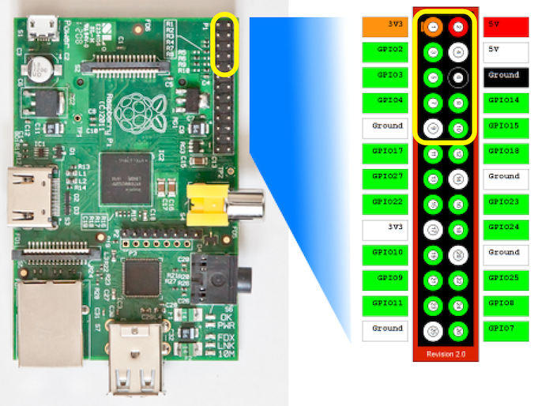

Hi all,
I have some noob questions about the EmonTx V3 I just recieved from the shop. Thank's guys for the quick shipping !
Note that I'm talking about an EmonTxV3 not fully assembled but ordered in a bundle with RFU+RFM12B, battery holder, power supply, ...
1. How to mount the RFU on the EmontxV3 board ? As I don't want to solder it directly onto the board, I have to use the male and female headers provided with the RFU. As I really don't feel confortable with soldering the headers, I want to be sure there is no alternative. So, could you please first confirm me that I have to solder the headers ? If yes, I guess that I have to solder the male headers on the board and the female headers on the RFU. Correct ? For the male headers, long or short pins to the board ? For the female headers, is there a good way ?
2. There is no antenna provided with the RFU, is it normal ? As my EmonTX will be very closed to my EmonBase (<3m), is it necessary to solder a cable antenna on the RFU ? If yes, what kind of cable should I use ?
3. Do I need to solder the battery holder of the EmonTxV3 ?
4. Another question about the Emonbase. Where to plug the RFM12BV2 on the RPI ? I mean on which GPIO pins ?
I'm sorry for asking these questions but I didn't managed to get these answers anywhere (on the main site, on the shop site or on the wiki.)
Regards,
Re: How to assemble an EmonTx V3
I haven't got an EmonTx V3 so I can't help with Q1-3. However to answer question 4,

If you look at your RFM12Pi board you should see in white GPIO PIn1 marked, this needs to match up with the P1 pin which is marked on the raspberry pi.
Re: How to assemble an EmonTx V3
The pictures here: http://wiki.openenergymonitor.org/index.php?title=EmonTx_V3#RFM12B might help you.
1. You do need to do some soldering. The male headers go on the edges of the RFu, with the long part mating with the female headers on the PCB, which of course use the holes adjacent to the SMT pads. So opposite to your assumption.
I haven't assembled one, if you're not confident that you can set the male headers accurately in position, you could try soldering the female into the PCB first, then mate the male, then fit the RFu between the pins. Only solder the two end pins first (on both male and female) and do the rest when you are sure they are in the correct places and a good fit. (You can unsolder one a lot easier than ten.)
2. I don't know whether a wire antenna is normally provided, all you need is a short length of solid insulated wire, the length is printed on the non-component side of the PCB. It solders onto the 'half-hole' immediately above the pad that leads to the SMA socket.
3. You don't need the battery holder if you are using a 5 V USB power supply or the ac adapter power (link JP2 made).
Re: How to assemble an EmonTx V3
HI,
Thank you both for helping me.
4. Ukmoose, I would like to add your picture into the wiki. Is it OK for you ?
1. So I am afraid I have to do some soldering. Thanks to Robert, I have a reasonable chance of doing it well but I am really not confident. In fact, I didn't select the option "emonTx V3 Assembled" when ordering because I was thinking that I will just have to plug the RFU. It should be clearly mention in the shop that adding RFU means soldering it. Today, I wish I had select this cheap option ...
2. I bought 3 EmonTx + RFU at the same time. Only for the first one, the wire antenna is missing. I will replace it.
3. I ordered a battery case for every EmonTx in addition to the AC adaptater power. I don't know if I will power the EmonTx with battery but now I have the battery cases. They seem to be at the right place, but not soldered. Can someone confirm that point ?
Eric
Re: How to assemble an EmonTx V3
If you are not confident to solder, buy a small piece of stripboard and a handful of cheap components, and practice on those first. Make sure your soldering iron is at the correct temperature, because you will cause more damage if it is too cold than if it is too hot as you will take longer to make the join. You should be able to solder one header pin in less than 1 s. Do not solder the pins in order - do one on one side, then one on the other side to allow the first side to cool before you go back to that side and do the third one, etc. If you take more than 1 s to solder one joint, stop. Allow it to go completely cold and only then try again.
The battery holder for the emonTx will fit in one place only. There is a printed rectangle that goes through the holes where you solder it to show where it fits. It was probably put into position so as not to be damaged or damage the PCB while in transit to you.
Re: How to assemble an EmonTx V3
Thank you so much for spending time to give these advices !
Re: How to assemble an EmonTx V3
I did it and everything seems to work fine !
Re: How to assemble an EmonTx V3
Congratulations on your new skills. Well done.